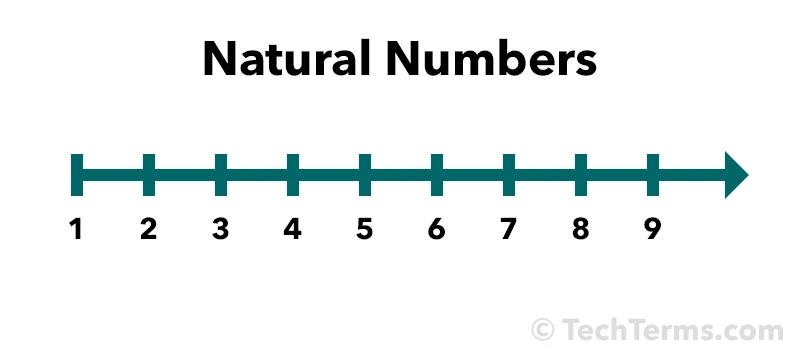
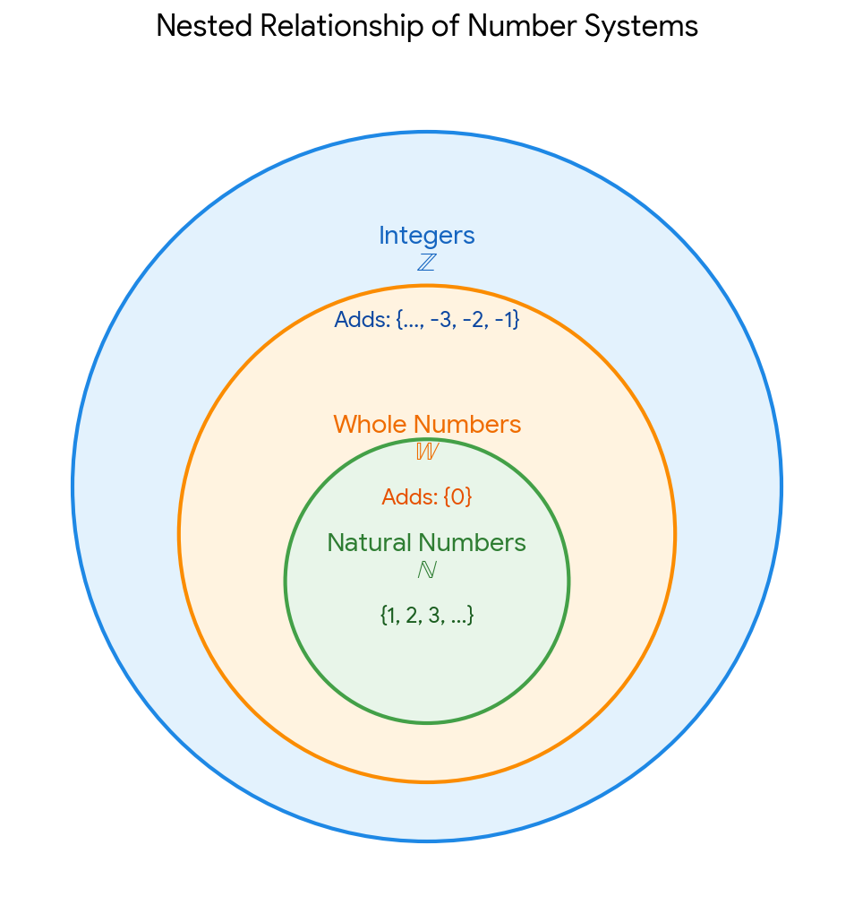
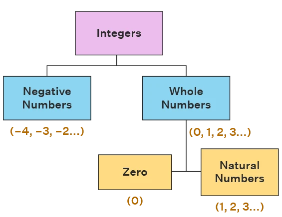

Real and Imaginary Numbers
Table of Contents
- Natural or Counting Numbers
- Whole Numbers
- Integers
- Rational Numbers
- Irrational Numbers
- Real Numbers
- The Real Number Line
- Imaginary Numbers
Natural or Counting Numbers
Natural numbers and counting numbers are mostly the same thing, representing the positive integers 1,2,3,4, and so on.
Counting Numbers
Definition: The positive whole numbers used to count physical items (1,2,3,4,...).
Starting point: Always starts at 1 because you start counting objects with "one".
Excludes: Zero, negative numbers, fractions, and decimals.

Natural Numbers
Definition: The positive numbers used for counting and ordering.
The Zero Debate: In most general math and school contexts, natural numbers are identical to counting numbers starting at 1. However, in some advanced math or set theory contexts, natural numbers include zero (0, 1, 2, 3,...). When zero is included, they are often called non-negative integers or whole numbers.

Whole Numbers
Whole numbers are the set of all positive integers plus zero. They are complete numbers that do not include any fractions, decimals, or negative values.
The mathematical set is represented by the capital letter W = {0,1,2,3,4,...}
The Core Components
The Smallest Whole Number: 0 is the absolute starting point.
The Rest: Every natural or "counting" number (1, 2, 3, 4,...) is also a whole number.
What is Excluded: Any negative number (-5, -6, -7,...), any fraction (like 3/4), and any decimal (like 2.5).

Integers
Integers are the set of all whole numbers and their negative opposites. They are numbers without any fractional or decimal parts, extending infinitely in both directions.
The mathematical set is represented by the capital letter Z (from the German word Zahlen, meaning "numbers"):
Z = {..., -3, -2, -1, 0, 1, 2, 3,...}
The Three Parts of Integers
Positive Integers: 0 Numbers greater than zero (1, 2, 3,...). These are your standard natural or counting numbers.
Negative Integers: Numbers less than zero (-1, -2, -3,...). They are the exact opposites of the positive numbers
Zero (0): Zero is a neutral integer. It is neither positive nor negative.
